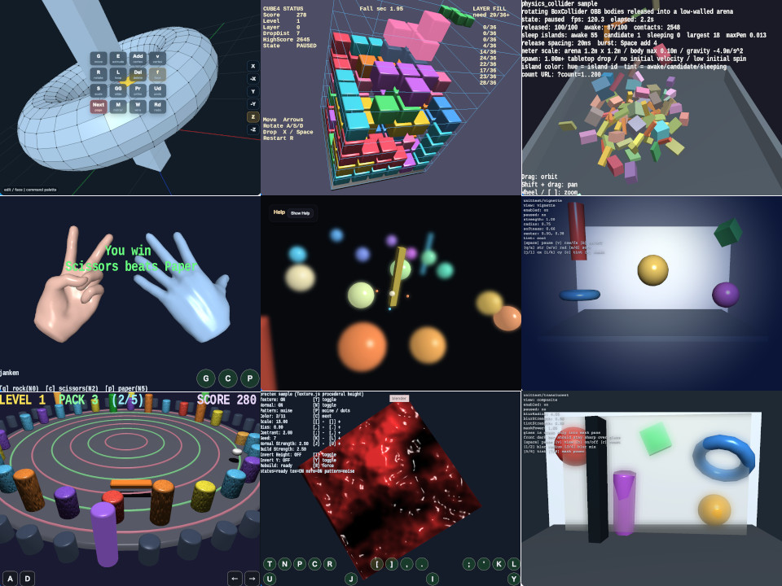

Sample
animation_state
samples/gltf_loader/hand.glb の手を読み込み、各指ポーズの action 自体は Action で再生しつつ、「今どの action を選ぶか」は AnimationState が決める構成を確認できます。
サンプルの全文は各 README へ移し、ここでは実行ファイルと README への入口を見やすく整理しています。実行ページは各 sample フォルダ内の サンプル名/サンプル名.html です。

動作確認用のアプリ一覧は ../unittest/index.html、book 内の実行用 HTML 一覧は ../book/examples/index.html を参照してください。
sample、unittest、headless testの境界とcompute sampleの比較結果は samples/README.md に整理しています。
WebgApp を使う sample は通常 release mode で起動します。デバッグ情報を見たい場合は sample 画面で F9 を押してから M を押すと debug / release mode を切り替えられます。診断情報の copy は F9 のあとに C、JSON copy は F9 のあとに V です。
compute_bloom、compute_dof、compute_physics_bounceは非compute版との比較ペアです。compute_effectは統合API、compute_benchmarkは計測、compute_jsonはModelAsset viewerを担当します。
compute_ssaoはdepth-only方式、compute_ssao_gbufferはG-buffer normalと正式SsaoPassを使う方式です。同じ題材でも入力と目的が異なるため、両方を比較用に残しています。
samples/gltf_loader/hand.glb の手を読み込み、各指ポーズの action 自体は Action で再生しつつ、「今どの action を選ぶか」は AnimationState が決める構成を確認できます。
3D 空間の原点に X / Y / Z の基準軸を置き、座標系の向きとスケール感を確認する教育用サンプルです
Billboard クラスで、常に camera 正面を向く particle 表現を描画するサンプルです
BloomPass を使って、3D scene を一度 offscreen RenderTarget へ描いてから bloom 合成して canvas へ戻すサンプルです。
複数のスキンメッシュ（触手）を同時にアニメーションし、ボーン変形と法線マップの見え方を確認するサンプルです。
webg のゲーム向け基礎機能を使って、3D 表現を取り入れたシンプルなブロック崩しを作るサンプルです。
webgの基本機能（シーン管理、衝突、HUD、音）をまとめて使った3Dブロック崩しの統合サンプルです。
main.js 内で指定した Collada (.dae) ファイルを読み込み、ModelAsset に正規化してから表示するサンプルです。
space.checkCollisions() で軸平行境界ボックス重なり判定（AABB, 広域）の候補を取り、サンプル内の球 vs mesh 距離判定で詳細衝突を検証するサンプルです。
CommandPalette.js が default style、起動 gesture、button、stepper、select を持つ高水準 UI 部品の実験サンプルです。
samples/bloom の比較対象となる Compute Shader 版です。
WebGPU の Compute Shader を使い、格子状の布を mass-spring モデルで更新するサンプルです
sample-local MRT passでalbedo、view-space normal、depthをG-bufferへ出力します。
1/2、1/4、1/8、1/16の連続low-pass画像を焦点距離に応じて補間し、近景・遠景の広いDoFと滑らかさを両立します。
scene color の 3x3 近傍を Compute Shader で読み、Sobel filter によるエッジ検出を行います。
明示材質G-buffer、Deferred Lighting、Shadow visibility、SSAO、SSR、HDR post effect、Tone Mapping、最終表示を統合します。
ComputeEffectPipeline と標準 compute effect API をそのまま使い、render、shadow、SSAO、SSR、DoF、Bloom などの GPU 負荷を同一 scene 条件で比較する計測サンプルです。
ModelAsset JSON のアニメーションを再生しながら、ComputeEffectPipeline の画面効果を切り替えて確認できる汎用 JSON ビューアです。
WebGPU の Compute Shader を使い、大量の粒子を GPU 側で更新して描画するサンプルです
球体の位置、半径、速度、反発係数、摩擦係数、色をstorage bufferへ保持します。
第20章のポストプロセス描画フローを、fragment shader の FullscreenPass ではなく Compute Shader で加工するサンプルです。
webg coreのShadowMapPassでstatic/skinned Shapeの単一directional light shadow mapを検証します。spot shadowは別コアAPIとして高水準pipelineから利用できます。
scene colorとsampleable depthをCompute Shaderで読み、depth-only SSAOを計算します。
GeometryBufferPassとSsaoPassを使い、G-buffer normalとdepthからSSAOを計算します。
sample-local G-bufferのalbedo、view-space normal、depthをCompute Shaderから読みます。
WebGPU の Compute Shader を使い、2 枚の texture を ping-pong しながら毎フレーム内容を書き換えるサンプルです
VignettePass の fragment shader 版と比較するため、同じ周辺減衰を Compute Shader 1 dispatch で処理します。
webg ベースで作った 3D falling-block game です
球体を複数配置し、色・テクスチャ・回転・カメラ操作をまとめて確認するサンプルです。
ノードの親子関係を実行中に attach / detach で切り替えるサンプルです。
DofPass の多段階ぼかしを使い、Focus Range を stage 1つ分の幅として調整できます。
WebgApp の layoutMode: "embedded" と fixedCanvasSize を使い、本文の途中へ埋め込んだ canvas の中で .glb ビューアを動かすサンプルです
user/walk_around の first-person 移動、spot light、衝突判定、レーダー表示を引き継ぎつつ、固定モデルではなく fixed-seed の procedural maze を runtime 生成して歩くサンプルです。
4m cellのprocedural mazeを八角形断面のSF通路として生成し、Deferred Lighting、SSR、geometry edge、色付き天井panel、first-person collision、heading-up radarをまとめて確認するサンプルです。
同じ16個のイコスフィアをSmoothShaderとDeferred Lightingで切り替え、材質パラメーターと照明モデルの違いを比較します。
1つのShapeに不透明・半透明materialを混在させ、全Shapeの透明triangle sortとComputeEffectPipeline後段効果を確認します。
Orbit、First Person、Followの役割と、アプリケーションが作るcamera階層の違いを確認するサンプルです。
shader 側に追加した fog を、WebgApp ベースのサンプルで一通り試すためのサンプルです。
main.js 内で指定した glTF / GLB ファイルを読み込み、ModelAsset に正規化してから表示するサンプルです。
README.md の「標準の使い方」にある WebgApp 例を、すぐ実行して確認できるサンプルとして切り出したものです
samples/gltf_loader/hand.glb の手モデルと AnimationState を使って、ジャンケンを行うサンプルです。
main.js 内で指定した ModelAsset JSON ファイルを読み込み、そのまま表示するサンプルです。
README.md の「標準の使い方」にある low-level 例を、そのまま実行しやすいサンプルとして切り出したものです
WebgApp で camera と HUD を整え、terrain mesh そのものは Shape の low-level API だけで作るサンプルです
スマートフォンやタブレットのタッチ操作に最適化した Blender 風の 3D modeler です
Primitive.js が返す ModelAsset を ModelValidator で検証し、ModelBuilder で Shape に変換して表示するサンプルです。
PhysicsSpace の中で複数の sphere が床、壁、球同士で反発しながら跳ねる見え方を確認するサンプルです
BoxCollider を持つ複数の body が、回転しながら落下し、空中や床上で接触し、押し合いながら落ち着いていく見え方を確認するサンプルです
WebgApp を土台に、Texture.js の手続きハイトマップ生成と法線マップ生成を同時に確認するサンプルです。
Scene JSON を SceneAsset.load() で読み込み、WebgApp.validateScene() と WebgApp.loadScene() を通してそのまま表示するサンプルです。
primitive 系サンプル群の中では、texture / image normal / procedural normal の見え方比較を 1 本へ寄せる主入口です。
ウェイト分布や回転軸を切り替えながら、スキニング変形を詳細に観察する教材向けサンプルです。
AudioSynth と GameAudioSynth を使い、SE と BGM を同じ画面で調整しながら確認するサンプルです。
ToneSynth だけを使い、単音または3和音で波形、envelope、reverb の違いを確認するサンプルです。